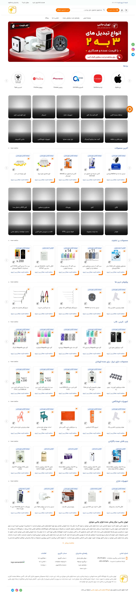
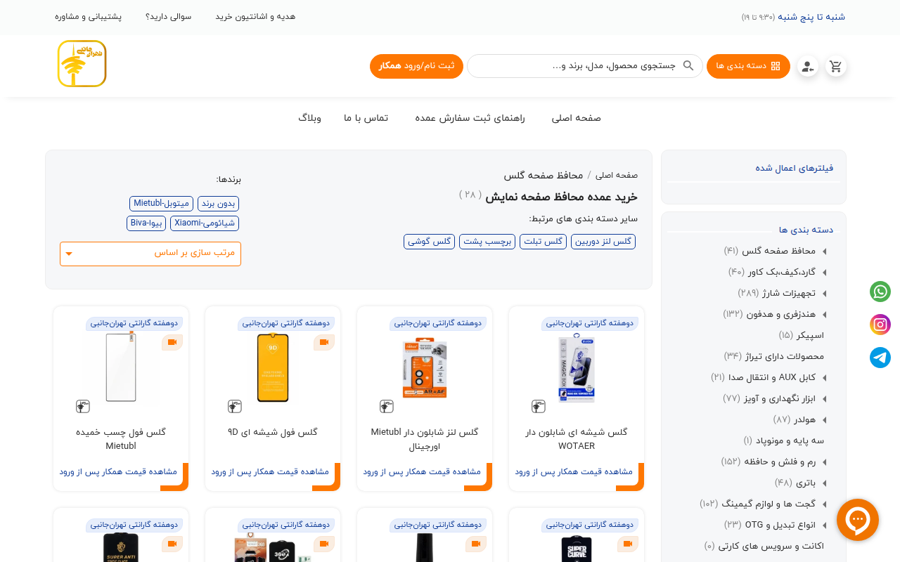
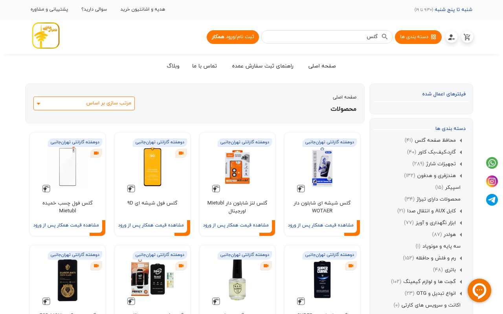
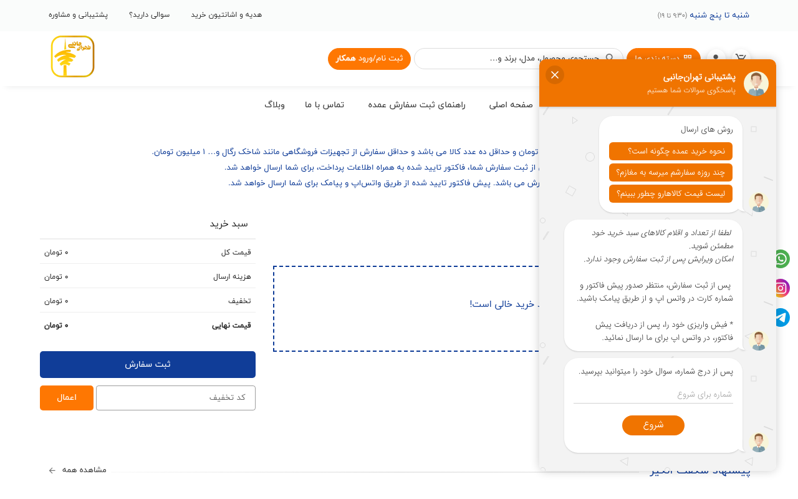
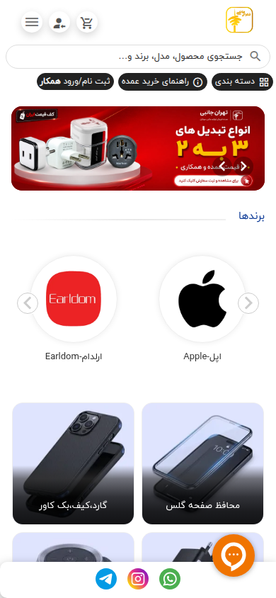
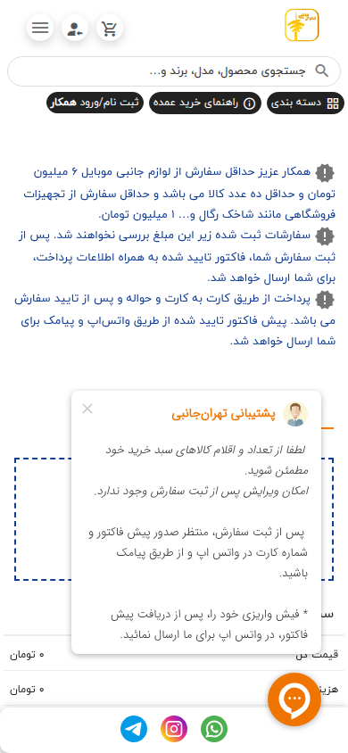

بازدید زنده بهعنوان مهمان در ۱۹ آبان ۱۴۰۵: صفحهٔ اصلی ← دستهٔ گلس ← یک صفحهٔ محصول (گلس شیشهای شابلوندار WOTAER) ← جستجوی «گلس» ← سبد خرید و ثبت سفارش. بدون ورود به حساب، بدون خرید، بدون واردکردن هیچ اطلاعات شخصی.
دو بازدید مستقل در مرورگر زنده (دسکتاپ، ۱۹۱۹×۹۹۸) بهعلاوهٔ اسکرینشات در دسکتاپ ۱۲۸۰ پیکسل و موبایل ۳۹۰ پیکسل؛ همهٔ اسکرینشاتها در پوشهٔ screenshots/ همین نمونه هست.
تست نشد: مراحل بعد از ورود، قیمت همکار، تسویه، پرداخت و پیگیری سفارش، چون نیازمند حساب کاربری است. زمانهای بارگذاری از مسیر پروکسی اندازهگیری شدهاند و نسبیاند، نه مطلق.
اولویت
توصیه
اولویت ۱
جستجو را اصلاح کنید
اولویت ۲
عکسهای خراب پنل را درست کنید
اولویت ۳
قیمت را پیش از ورود نشان دهید
اولویت ۴
پنجرهٔ چت را خودکار باز نکنید
اولویت ۵
سبد خرید و ثبت سفارش را درست کنید
اولویت ۶
عددها و وعدهها را یکی کنید؛ شرایط مرجوعی را بنویسید
اولویت ۷
متنها را بازخوانی کنید
اولویت ۸
عکسها و سرعت صفحه را درست کنید
خلاصهٔ یافتههای اصلی
جستجو خراب است: جستجوی «گلس»، اصلیترین کالای فروشگاه، اول «محصولی یافت نشد» نشان میدهد؛ نتایج فقط پس از چند ثانیه تأخیر ظاهر میشوند و در یک بازدید دوم همان پیام خالی باقی ماند.
عکسهای خراب در صفحهٔ اصلی: سه عکس از پنل سایت خطای ۴۰۴ میدهند؛ در صفحهٔ اصلی دو عکس خراب بهصورت کاشی خاکستری دیده میشوند.
هیچ قیمتی برای مهمان دیده نمیشود: روی همهٔ کارتها فقط «مشاهده قیمت همکار پس از ورود» نوشته شده؛ اولین قیمت فقط بعد از افزودن به سبد خرید دیده میشود.
سبد خرید عدد اشتباه میسازد: یک کلیک با تعداد ۱، در سبد تعداد ۲ ثبت شد؛ «هزینه ارسال ۰ تومان» پیش از انتخاب آدرس نشان داده میشود.
سه وعدهٔ ارسال متفاوت (۱ تا ۲، ۱ تا ۳ و ۱ تا ۴ روز کاری) و هیچ شرایط مرجوعی در هیچ صفحهای نیست.
موبایل سالم است: در ۳۹۰ پیکسل هیچ سرریز افقی در هیچ صفحهای نیست و چیدمان تکستونه خواناست.
۱. صفحهٔ اصلی
سایت سریع بارگذاری میشود و چیدمان راستبهچپ آن تمیز است: لوگوی زرد بالا-راست، دکمهٔ نارنجی «ثبت نام/ورود همکار»، جعبهٔ جستجوی بزرگ «جستجوی محصول، مدل، برند و…»، منوی «دسته بندی ها»، بنر «به تهران جانبی خوش آمدید» و بعد کاشیهای دستهبندی، کاروسل برندها (APPLE ،SAMSUNG ،XIAOMI ،HUAWEI ،ANKER ،WIWU ،BASEUS ،MIETUBL و…) و کاروسلهای «جدیدترین محصولات» و «پرفروش ترین ها».
نوار آمار سایت ادعا میکند ۸۲۴۱ محصول، ۱۲۲ برند، ۳۳۵ فروشنده و ۳۰۵۶ سفارش ثبتشده دارد. شمارههای تماس در فوتر مشخص است: پیگیری سفارش 09107605110، مدیریت 09120763540، ساعت کاری «شنبه تا پنج شنبه (۹:۳۰ تا ۱۹)».
هیچ قیمتی برای مهمان نیست. روی همهٔ کارتهای محصول فقط «مشاهده قیمت همکار پس از ورود» نوشته شده است. بازدیدکنندهٔ تازه بدون حساب کاربری نمیتواند حتی یک قیمت را با رقبا مقایسه کند.
کاشیهای دستهبندی عکس ندارند. در اسکرینشات تمامصفحهٔ دسکتاپ، هر ۱۰ کاشی دستهبندی یک گرادیان خاکستری خالیاند و مثل جعبههای خالی دیده میشوند.
دو عکس در صفحه خراب است. پایین ردیف «جدیدترین محصولات» کاشیهای خاکستری جای عکس ظاهر شد و مرورگر دو عکس را «در دسترس نیست» گزارش کرد. در بازدید دوم هم دو عکس در نوار «پیشنهاد شگفت انگیز» خراب بود.
کاروسلها محصول تکراری نشان میدهند. مثلاً گلسهای Mietubl در یک کاروسل دو تا سه بار تکرار میشوند؛ شبیه کلونهای اسلایدر است، نه محصول متفاوت.
غلطهای فاصلهگذاری در سراسر صفحه تکرار میشود: «ثبت نام/ورودهمکار»، «دوهفته گارانتی تهرانجانبی» و در کپیرایت فوتر «کلیه حقوق مادی و معنوی برایفروشگاه لوازم جانبی موبایل تهران جانبیمحفوظ می باشد.»

صفحهٔ اصلی، نمای کامل دسکتاپ (۱۲۸۰ پیکسل): هر ۱۰ کاشی دستهبندی خاکستری خالیاند و عکس ندارند. روی همهٔ کارتهای محصول «مشاهده قیمت همکار پس از ورود» نوشته شده است.
۲. دستهٔ گلس
صفحهٔ دستهٔ گلس سریع بارگذاری میشود. زیرمجموعهها درستاند: گلس گوشی، گلس تبلت، گلس لنز دوربین، برچسب پشت. فیلترها در ستون کناری هست: اسلایدر قیمت، «فقط محصولات موجود»، «فقط محصولات دارای تخفیف»، چکباکس برندها (Apple ،Samsung ،Xiaomi ،Huawei ،WiWU ،Mietubl ،Anker ،Baseus و…) و فیلتر «تخفیف خرید عمده». مرتبسازی و صفحهبندی (۳ صفحه) هم کار میکند.
عدد صفحه با خودش نمیخواند. تیتر صفحه میگوید «خرید عمده محافظ صفحه نمایش ( ۲۸ )» ولی همان صفحه در ستون کناری مینویسد «محافظ صفحه گلس (۴۱)». یک صفحه، دو عدد متفاوت برای یک دسته.
اسلایدر قیمت بیفایده است: بازهٔ ۷٬۹۰۰ تا ۱۹٬۹۰۰٬۰۰۰ تومان برای گلس؛ بازهای آنقدر باز که فیلتر کردن با آن معنا ندارد.
فقط یک نظر مشتری در کل صفحه هست («علی بطیار، ۲۸ اردیبهشت ۱۴۰۲، خوش قیمته سودش هم خوبه»).
غلط املایی در متن سئو: یک خط مستقل در بلوک سئوی پایین صفحه میگوید «پرچسب پشت»؛ درحالیکه دکمهٔ دستهٔ مرتبط بالای آن درست نوشته شده («برچسب پشت») و یک تیتر دیگر هم «گلس برچسب پشت» است. یعنی «پرچسب پشت» یک تیتر یا لینک شکسته در بلوک سئوست.
لحن متن سئو یکدست نیست: «میدونید که خرید عمده…»، «قیمتهای ویژه برای عمدهفروشان»، «گلسه» و «نیم صفحه/نیمصفحه» بهصورت ناسازگار نوشته شدهاند.
پنجرهٔ چت گفتینو خودبهخود باز میشود و بخش بزرگی از ستون فیلتر را میپوشاند؛ برای شروع چت هم شمارهٔ موبایل میخواهد.

دستهٔ گلس، دسکتاپ: تیتر «خرید عمده محافظ صفحه نمایش (۲۸)» در برابر «محافظ صفحه گلس (۴۱)» در ستون کناری؛ روی همهٔ کارتها «مشاهده قیمت همکار پس از ورود» است؛ حباب چت گفتینو پایین-راست صفحه باز است.
۳. صفحهٔ محصول، گلس شیشهای شابلوندار WOTAER
صفحهٔ محصول سریع بارگذاری میشود. یک عکس اصلی («MAGIC BOX»، واضح و بهاندازهٔ کافی بزرگ) با ۳ بندانگشتی کوچک (جلوهٔ بسته، طرح شیشه، جعبهٔ آبی). شرایط عمدهفروشی صریح نوشته شده: «این محصول تنها به صورت عمده و برای فروش به همکاران قابل سفارش است.»
گالری ضعیف است: فقط عکس بستهٔ محصول هست؛ هیچ عکس گلس نصبشده یا در حال استفاده نیست و ۲ تا از ۳ بندانگشتی شبیه جاینگهدار (placeholder) دیده میشوند. یک عکس، محصول را نمیفروشد.
جدول «تخفیف بر اساس تعداد سفارش» هیچ تخفیفی نشان نمیدهد: فقط یک ردیف دارد، «۱ تا ۱۰۰۰۰»، با قیمت «پس از ورود». یعنی جدول هیچ اطلاعاتی نمیدهد.
جدول مدلها قویترین بخش صفحه است: ۱۱ ردیف، همه «موجود»، کدهای ۲۶۷۱۹ تا ۲۶۷۲۹، آیفون ۱۳/۱۳ پرو/۱۴ تا آیفون ۱۷ پرو مکس، هر ردیف با شمارندهٔ تعداد و دکمهٔ «افزودن به سبد خرید» خودش.
رشتههای انگلیسی ترجمهنشده در جدول مدلها: «Rows per page:» ،«Previous page» ،«Next page» و راهنمای ستونها «Not sorted. Activate to sort ascending.»
غلطهای فاصلهگذاری در فهرست ویژگیها و متن توضیحات تکرار میشود: «دارایاستاندارد سختی 9H»، «دوهفته گارانتی تهرانجانبی»، «خرید عمده گلس شیشهای شابلوندار»، «فوقالعاده»، «دغدغههای»، «پرمصرفترین»، «چالشهای»، «تازهکاران» و در خط مشخصات «شناسه محصول:115156دسته:».
تب نظرات خالی است: هیچ نظری نیست؛ فقط یک فرم که نام، نام خانوادگی، شمارهٔ موبایل (اجباری)، ایمیل و نظر (تا ۲۰۰۰ حرف) بهعلاوهٔ امتیاز ۵ ستاره میخواهد.
کاروسل «محصولات مشابه» همان ۶ محصول Mietubl را سه بار تکرار میکند.
۴. جستجو
جستجو مهمترین نقص فنی سایت است. جستجوی «گلس»، اصلیترین کالای فروشگاه، در هر دو بازدید زنده اول یک پیام خالی نشان داد.
پیشنهادهای زنده خراب است: هنگام تایپ «گلس» در جعبهٔ جستجو، منوی کشویی اول یک چرخنده نشان میدهد و بعد «محصولی یافت نشد»، درحالیکه دهها گلس در سایت هست. در اسکرینشات هم پس از تایپ «گلس» و ۱٫۵ ثانیه انتظار هیچ پیشنهاد جستجویی ظاهر نشد.
صفحهٔ نتایج هم اول خالی است: پس از ارسال جستجو، صفحهٔ نتایج اول فقط یک کادر خطچین «محصولی یافت نشد» نشان میدهد؛ بدون تعداد نتیجه، بدون پیشنهاد و بدون لینک جایگزین. در بازدید دسکتاپ نتایج پس از چند ثانیه تأخیر ظاهر شدند (دستکم ۸ گلس در اولین صفحه، صفحهبندی تا صفحهٔ ۳)؛ در بازدید دوم همان پیام خالی باقی ماند. جستجوی کنترلی برای برند دقیق «WOTAER» هم همین رفتار را داشت: اول حالت خالیِ اشتباه، بعد ۱ نتیجه.
عبارت جستجو در جعبه حفظ نمیشود: در صفحهٔ نتایج جعبهٔ جستجو خالی است؛ فقط آدرس صفحه عبارت را دارد. منوی کشویی «مرتب سازی بر اساس» هم هیچ مقدار انتخابشدهای نشان نمیدهد.
فیلتر قیمت صفحهٔ نتایج بیفایده است: بازهٔ ۰ تا ۵۰٬۰۰۰٬۰۰۰ تومان و فهرست برند با بیش از ۴۰ چکباکس.
مرتبطبودن نتایج شل است: در نتایج «گلس»، «روغن گلس براشتی»، یک روغن، هم آمده است.
جستجوی «گلس»، دسکتاپ: پس از تایپ عبارت و ۱٫۵ ثانیه انتظار، هیچ پیشنهاد جستجویی ظاهر نشد، در بازدید زندهٔ مرورگر، منوی کشویی بهجای پیشنهاد، «محصولی یافت نشد» نشان داد.

صفحهٔ نتایج جستجوی «گلس»: تیتر صفحه فقط «محصولات» است، بدون تعداد نتیجه و بدون تکرار عبارت جستجو؛ نتایج فقط پس از چند ثانیه تأخیر ظاهر میشوند.
۵. سبد خرید و ثبت سفارش
افزودن به سبد خرید بهعنوان مهمان کار میکند. اما سبد خرید چند نقص مشخص دارد.
یک کلیک، تعداد ۲ ثبت میکند: با شمارنده روی ۱، یک بار روی «افزودن به سبد خرید» کلیک شد؛ سبد تعداد ۲ نشان داد، قیمت واحد ۶۳۵٬۰۰۰ تومان، جمع خط ۱٬۲۷۰٬۰۰۰ تومان. این اولین جایی است که اصلاً قیمتی دیده میشود؛ قیمت واحد فقط بعد از افزودن به سبد آشکار میشود، درحالیکه در فهرستها پنهان است.
«هزینه ارسال ۰ تومان» پیش از انتخاب آدرس نشان داده میشود، گمراهکننده است؛ هزینهٔ ارسال هنوز محاسبه نشده، صفر نیست.
بخش «پیشنهاد شگفت انگیز» در صفحهٔ سبد خالی است: تیتر و «مشاهده همه» هست، ولی هیچ محصولی زیر آن نیست.
ثبت سفارش برای مهمان بسته است: کلیک روی «ثبت سفارش»، هم در کشوی سبد و هم در صفحهٔ سبد، هیچ مرحلهٔ آدرس/ارسال/پرداخت باز نمیکند؛ فقط یک اعلان قرمز میگوید «ابتدا وارد حساب کاربری خود شوید.»
پرداخت فقط کارتبهکارت است: طبق اطلاعیهٔ بالای سبد، حداقل سفارش لوازم جانبی موبایل ۶ میلیون تومان و حداقل ۱۰ عدد کالا است (تجهیزات فروشگاهی ۱ میلیون تومان)؛ سفارشهای زیر این مبلغ بررسی نمیشوند؛ پس از ثبت سفارش، فاکتور تأییدشده بههمراه اطلاعات پرداخت ارسال میشود و پرداخت با کارتبهکارت و حواله پس از تأیید سفارش است؛ پیشفاکتور تأییدشده از طریق واتساپ و پیامک میرسد. هیچ درگاه پرداخت آنلاینی در مسیر خرید نیست.
شرایط مرجوعی هیچجا نیست: جستجوی «مرجوع» در فوتر، راهنمای خرید، صفحهٔ محصول و صفحهٔ دسته هیچ نتیجهای نداد. تنها وعدهٔ مرتبط، نشان «دوهفته گارانتی تهران جانبی» است، بدون هیچ شرط، فرایند یا استثنایی.
سه وعدهٔ ارسال متفاوت: راهنمای خرید در تیتر میگوید «ارسال سریع، بین ۱ تا ۲ روز کاری» و در بدنهٔ همان صفحه «بین یک تا چهار روز کاری»؛ سؤالات متداول دستهٔ گلس میگوید «۱ تا ۳ روز کاری». سه عدد متفاوت برای یک وعده.
راهنمای خرید ادعای «قیمتگذاری شفاف» میکند، درحالیکه هیچ قیمتی برای مهمان دیده نمیشود. ادعا با واقعیت سایت در تضاد است.

سبد خرید، دسکتاپ: پنجرهٔ چت گفتینو خودبهخود باز شده و بخش بزرگی از صفحه را پوشانده است؛ هزینهٔ ارسال «۰ تومان» پیش از انتخاب آدرس نشان داده میشود.
۶. نشانههای اعتماد
دیده شد: شمارههای تماس در همهٔ صفحات (پیگیری سفارش 09107605110، مدیریت 09120763540)، ساعت کاری مشخص، نشانی حضوری در اطلاعات فروشگاه، دکمههای واتساپ/اینستاگرام/تلگرام و چت گفتینو.
نشان اینماد سالم است: نشان اینماد از یک اتصال واقعی داخل ایران درست بارگذاری میشود (بررسی رضا محمدرضایی، ۲۰ آبان ۱۴۰۵)؛ دیدهنشدن آن در اسکرینشاتها اثر پروکسی بود، نه سایت.
عکسهای خراب (از لاگ شبکه): سه عکس از panel.tehranjanebi.com خطای ۴۰۴ میدهند (تأییدشده با curl).
۷. موبایل (۳۹۰ پیکسل)
اسکرینشاتهای واقعی ۳۹۰ پیکسل نشان میدهند موبایل از نظر چیدمان سالم است:
هیچ سرریز افقی در هیچ صفحهای نیست، عرض اسکرول برابر عرض پنجره در هر پنج صفحه، در هر دو عرض ۱۲۸۰ و ۳۹۰ پیکسل. هیچ اسکرول افقی در هیچجا نیست.
صفحهٔ اصلی تکستونه و خواناست: منوی همبرگری، آیکون حساب و سبد، جستجوی تمامعرض، بنر بهخوبی کوچک میشود، کاروسل برندها دوتا دوتا نشان میدهد.
گالری محصول و کارتها در موبایل تمیز مقیاس میشوند؛ تکستونه و خوانا.
دو همپوشانی کوچک هست: نوار چسبان پایین (تلگرام/اینستاگرام/واتساپ) بهعلاوهٔ دکمهٔ نارنجی چت کمی روی محتوا میافتد؛ در صفحهٔ جستجو دکمهٔ شناور نارنجی فیلتر و دکمهٔ چت لبههای محتوا را میپوشانند، ولی خواندن را مسدود نمیکنند.
اما پنجرهٔ چت در موبایل جدی است: در صفحهٔ سبد خرید موبایل، گفتینو خودبهخود باز میشود و تقریباً تمام عرض صفحه را میگیرد و خلاصهٔ سبد را پنهان میکند.

صفحهٔ اصلی در ۳۹۰ پیکسل: تکستونه، منوی همبرگری، جستجوی تمامعرض، بنر خوانا؛ هیچ سرریز افقی نیست.

سبد خرید در ۳۹۰ پیکسل: پنجرهٔ چت گفتینو خودبهخود باز شده و بیشتر عرض صفحه را گرفته و خلاصهٔ سبد را پنهان کرده است.
۸. سرعت و خطاها
زمانهای بارگذاری (اندازهگیریشده از مسیر پروکسی؛ نسبی، نه مطلق): صفحهٔ اصلی ۴٫۵ ثانیه دسکتاپ / ۳٫۵ ثانیه موبایل؛ دستهٔ گلس ۱٫۸ / ۱٫۹؛ صفحهٔ محصول ۴٫۲ / ۴٫۰؛ جستجو ۲٫۰ / ۱٫۸؛ سبد ۱٫۵ / ۱٫۳. سنگینترین صفحهها صفحهٔ اصلی و صفحهٔ محصولاند.
صفحهٔ اصلی ۱۷۵ عکس در دسکتاپ و ۱۱۹ عکس در موبایل دارد.
کندترین منابع تکی، عکسهای گالری محصولاند (۱٫۷ تا ۲٫۴ ثانیه هرکدام)؛ یک درخواست تحلیلی یکتانت در جستجوی دسکتاپ ۸٫۶ ثانیه طول کشید.
صفحه هرگز به «شبکهٔ بیکار» نمیرسد: درخواستهای شخص ثالث (یکتانت، گفتینو) بعد از بارگذاری هم معلق میمانند.
یک خطای کنسول در هر نما از مسیر پروکسی: Failed to load resource: net::ERR_EMPTY_RESPONSE (نشان اینماد)، از یک اتصال داخل ایران این خطا رخ نمیدهد و نشان سالم است.
توصیهها (به ترتیب اولویت)
اولویت ۱: جستجو را اصلاح کنید
مشکل: جستجوی «گلس» اول «محصولی یافت نشد» نشان میدهد، هم در پیشنهادهای زنده و هم در اولین رندر صفحهٔ نتایج. بازدیدکننده فکر میکند فروشگاه گلس ندارد و میرود؛ درحالیکه دهها گلس در سایت هست. عبارت جستجو در جعبه حفظ نمیشود، مرتبسازی هیچ مقدار انتخابشدهای نشان نمیدهد و فیلتر قیمت ۰ تا ۵۰ میلیون تومان بیفایده است. پیشنهاد: حالت خالی را تا کاملشدن درخواست جستجو نشان ندهید؛ در زمان انتظار یک حالت بارگذاری نشان دهید. اگر درخواست پیشنهادها شکست خورد، بهجای «یافت نشد» پیام خطا با دکمهٔ تلاش دوباره بدهید. عبارت تایپشده را در جعبهٔ جستجوی صفحهٔ نتایج نگه دارید؛ مقدار پیشفرض مرتبسازی را مشخص کنید؛ بازهٔ اسلایدر قیمت را به بازهٔ واقعی قیمتهای همان دسته محدود کنید و نتایج نامرتبط (مثل روغن در جستجوی گلس) را از نتایج حذف کنید. اثر مورد انتظار: بازدیدکنندهای که دنبال یک مدل مشخص آمده، بهجای پیام خالیِ اشتباه، همان لحظه نتیجه میبیند.
اولویت ۲: عکسهای خراب پنل را درست کنید
مشکل: سه عکس از panel.tehranjanebi.com خطای ۴۰۴ میدهند و در صفحهٔ اصلی دو عکس خراب بهصورت کاشی خاکستری دیده میشوند؛ خریدار بهجای عکس کالا یک جعبهٔ خالی میبیند. پیشنهاد: عکسهای ۴۰۴ پنل را جایگزین یا حذف کنید و پس از اصلاح، صفحهٔ اصلی را دوباره بررسی کنید تا هیچ کاشی خاکستری بهجای عکس نماند. اثر مورد انتظار: خریدار در صفحهٔ اصلی عکس واقعی کالا را میبیند، نه جعبهٔ خالی.
اولویت ۳: قیمت را پیش از ورود نشان دهید
مشکل: هیچ قیمتی برای مهمان دیده نمیشود؛ روی همهٔ کارتها فقط «مشاهده قیمت همکار پس از ورود» است. جدول «تخفیف بر اساس تعداد سفارش» هم فقط یک ردیف «۱ تا ۱۰۰۰۰» با قیمت «پس از ورود» دارد، یعنی هیچ اطلاعاتی نمیدهد. اولین قیمت فقط بعد از افزودن به سبد دیده میشود (۶۳۵٬۰۰۰ تومان)، که با سیاست پنهانبودن قیمت در فهرستها در تضاد است. راهنمای خرید همزمان ادعای «قیمتگذاری شفاف» میکند. پیشنهاد: دستکم قیمت چند کالای پرفروش یا بازهٔ قیمت هر دسته را بدون ورود نشان دهید، یا قیمت عمده را پس از یک ثبتنام سادهٔ یکمرحلهای نشان دهید، نه پس از تأیید دستی حساب. جدول پلکانی را یا به ردیفهای واقعی (۱۰، ۵۰، ۱۰۰ عدد به بالا با قیمت متفاوت) تبدیل کنید یا حذفش کنید. ادعای «قیمتگذاری شفاف» را تا وقتی قیمتها دیده نمیشوند از راهنما بردارید. اثر مورد انتظار: خریدار تازهوارد پیش از ثبتنام میتواند شما را با رقبا مقایسه کند و دلیلی برای ثبتنام داشته باشد.
اولویت ۴: پنجرهٔ چت را خودکار باز نکنید
مشکل: گفتینو خودبهخود باز میشود: در دستهٔ گلس بخش بزرگی از ستون فیلتر را میپوشاند؛ در صفحهٔ سبد خرید دسکتاپ حدود ۴۰٪ صفحه و در موبایل تقریباً تمام عرض را میگیرد و خلاصهٔ سبد را پنهان میکند؛ دکمههای «سبد خرید» و «ثبت سفارش» در کشوی سبد تا حدی زیر حباب چت میروند. برای شروع چت هم شمارهٔ موبایل میخواهد. پیشنهاد: چت را فقط بهصورت یک دکمهٔ بسته نگه دارید و هرگز خودکار بازش نکنید؛ پیش از اولین پیام، شمارهٔ موبایل نخواهید. دکمهٔ چت نباید روی دکمههای سبد خرید و ثبت سفارش بیفتد. اثر مورد انتظار: خریدار در مهمترین لحظه، فیلتر کردن و ثبت سفارش، جلوی ابزارش خالی است.
اولویت ۵: سبد خرید و ثبت سفارش را درست کنید
مشکل: یک کلیک با تعداد ۱، در سبد تعداد ۲ ثبت میکند (جمع ۱٬۲۷۰٬۰۰۰ تومان بهجای ۶۳۵٬۰۰۰ تومان)؛ «هزینه ارسال ۰ تومان» پیش از انتخاب آدرس نشان داده میشود؛ بخش «پیشنهاد شگفت انگیز» در صفحهٔ سبد خالی است؛ و «ثبت سفارش» برای مهمان فقط یک اعلان قرمز «ابتدا وارد حساب کاربری خود شوید» میدهد، بدون هیچ مرحلهٔ مهمان، بدون درگاه پرداخت، فقط کارتبهکارت پس از تأیید. پیشنهاد: باگ دوبرابرشدن تعداد را اصلاح کنید؛ هزینهٔ ارسال را فقط بعد از انتخاب آدرس نشان دهید یا بنویسید «پس از انتخاب آدرس محاسبه میشود»؛ بخش خالی «پیشنهاد شگفت انگیز» را تا وقتی محصول ندارد پنهان کنید؛ و پیش از افزودن به سبد، همان بالای صفحهٔ سبد بنویسید که سفارش نیازمند ورود است و حداقل سفارش ۶ میلیون تومان و ۱۰ عدد کالاست، نه بعد از اینکه خریدار سبد را پر کرد. اثر مورد انتظار: جمع سبد درست است، هزینهٔ ارسال گمراه نمیکند و خریدار پیش از صرف وقت میداند سفارش به ورود نیاز دارد.
اولویت ۶: عددها و وعدهها را یکی کنید؛ شرایط مرجوعی را بنویسید
مشکل: تیتر دسته میگوید ۲۸ محصول و ستون کناری ۴۱؛ زمان ارسال در سه جای سایت سه عدد متفاوت است (۱ تا ۲، ۱ تا ۳ و ۱ تا ۴ روز کاری)؛ و شرایط مرجوعی یا تعویض در هیچ صفحهای نیست، جستجوی «مرجوع» هیچ نتیجهای نمیدهد. تنها وعده، نشان «دوهفته گارانتی تهران جانبی» است، بدون شرط و فرایند. پیشنهاد: تعداد محصولات و زمان ارسال را از یک منبع واحد بخوانید تا همهجا یکی باشد؛ یک صفحهٔ «شرایط مرجوعی و تعویض» بنویسید و در فوتر همهٔ صفحات به آن لینک بدهید؛ شرایط، فرایند و استثناهای گارانتی دوهفتهای را هم در همان صفحه و کنار نشان گارانتی بنویسید. اثر مورد انتظار: خریدار عمدهٔ تازه، که اولین خریدش ریسک دارد، عددهای متناقض نمیبیند و میداند اگر کالا مشکل داشت چه اتفاقی میافتد.
اولویت ۷: متنها را بازخوانی کنید
مشکل: «پرچسب پشت» بهجای «برچسب پشت» در بلوک سئوی دستهٔ گلس؛ غلطهای فاصلهگذاری در سراسر سایت («دوهفته»، «تهرانجانبی»، «دارایاستاندارد»، «برایفروشگاه»، «ثبت نام/ورودهمکار»، «قیمتهای ویژه برای عمدهفروشان»، «گلسه»، «نیم صفحه/نیمصفحه»)؛ رشتههای انگلیسی ترجمهنشده در جدول مدلها («Rows per page:» ،«Previous page» ،«Next page»)؛ و کاروسلهایی که همان محصولات را تکرار میکنند (۶ محصول Mietubl سه بار در «محصولات مشابه»). پیشنهاد: همهٔ متنهای دستهها، محصول و فوتر یک بار بازخوانی شوند؛ نام دستهها با نامهایی که در فیلتر و منو میآید یکی شود؛ جدول مدلها به فارسی برگردد؛ و آیتمهای تکراری از کاروسلها حذف شوند. اثر مورد انتظار: فروشگاه عمدهفروشی حرفهای دیده میشود؛ هزینهٔ انجام آن تقریباً صفر است.
اولویت ۸: عکسها و سرعت صفحه را درست کنید
مشکل: کاشیهای دستهبندی در صفحهٔ اصلی عکس ندارند و خاکستری خالیاند؛ گالری محصول فقط عکس بسته است و ۲ تا از ۳ بندانگشتی شبیه جاینگهدار دیده میشوند. صفحهٔ اصلی ۱۷۵ عکس در دسکتاپ دارد و زمان بارگذاری آن ۴٫۵ ثانیه و صفحهٔ محصول ۴٫۲ ثانیه است (اندازهگیریشده از مسیر پروکسی)؛ عکسهای گالری هرکدام ۱٫۷ تا ۲٫۴ ثانیه طول میکشند و صفحه هرگز به «شبکهٔ بیکار» نمیرسد. پیشنهاد: برای کاشیهای دستهبندی عکس واقعی بگذارید؛ به گالری محصول یک عکس گلس نصبشده اضافه کنید؛ عکسهای گالری را فشرده کنید و عکسهای پایین صفحه را با lazy-load بارگذاری کنید؛ و سرعت را از یک اتصال واقعی دوباره اندازه بگیرید. اثر مورد انتظار: صفحهٔ اصلی بهجای جعبههای خاکستری، ویترین واقعی فروشگاه میشود و صفحات محصول سریعتر باز میشوند.
اسکرینشاتها (شواهد)
همه در پوشهٔ screenshots/ همین نمونه؛ دسکتاپ ۱۲۸۰ پیکسل و موبایل ۳۹۰ پیکسل، گرفتهشده ۱۹ آبان ۱۴۰۵: